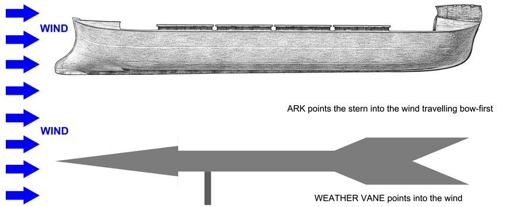

Seakeeping — Weathervaning
The Ark has no propulsion, no rudder, and no crew capable of sustained manual steering for 371 days. Yet the most dangerous seakeeping condition — the organised wind sea of the receding phase (Genesis 8:1, days 150–371) — requires consistent heading alignment to prevent broaching and boarding seas. The solution is passive weathervaning: external hull form asymmetry that causes the vessel to align automatically under any wind load, without crew intervention.
This page covers the external hull form aspects of weathervaning. For internal bow and stern compartments see Hull — Bow & Stern. For the wave environment that makes weathervaning necessary see Seakeeping — Waves.
1. The Wind Vane Principle

The Ark as a weather vane. The arrow is the stern and the feathers is the bow, so the Ark travels with the wind
This can be confusing when compared to a modern powered ship, where the ship drives into the waves bow-first. Here the Ark travels with the waves, stern into the waves. We call the wind-catching end teh bow, because it reminds us that the Ark is meant to travel in that direction - with the wind. Notice that the pivot point on the weather vave is closer to the arrow. Likewise, teh Ark is pivotting in the water closer to the stern, due to teh extended sked (fixed rudder), deepening keels, trim to stern and hull geometry assymetry. So the Ark catches teh water near the stern, and catches teh wind near the bow - which aligns it with the wind and waves.
The Ark functions as a wind vane. On a traditional wind vane, the arrow points into the wind — that arrow is the stern of the Ark: deep keels, low freeboard, anchored upwind. The wind vane tail blows downwind — that is the bow: high freeboard, catches wind, leads downwind. The Ark drifts bow-first downwind, waves approaching from astern. No propeller, no rudder, no crew intervention — pure geometry.
| Wind vane element | Ark equivalent | Mechanism |
|---|---|---|
| Arrow — points into wind | Stern — deep keels, low freeboard | High lateral resistance, low wind resistance — anchored upwind |
| Tail — blows downwind | Bow — high freeboard | Low lateral resistance, high wind resistance — pushed downwind freely |
The Ark drifts bow-first downwind — waves approach from astern. This is the optimal orientation for a passive vessel in an organised wind sea:
| Orientation | Motion | Risk |
|---|---|---|
| Beam to waves | Rolling — transverse | HIGH — resonance, boarding seas, structural racking |
| Bow leading downwind | Pitching — longitudinal | LOW — 157m hull handles hogging/sagging well |
Weathervaning is self-correcting: If a cross-sea temporarily pushes the vessel off heading, the asymmetry restores bow-downwind automatically. No crew intervention, no mechanism, no failure modes.
2. The Asymmetry Mechanism
| End | External form | Wind resistance | Lateral resistance | Effect |
|---|---|---|---|---|
| Bow | High freeboard, upright profile — catches wind | High | Low — keel tapered away | Pushed downwind freely — leads downwind |
| Stern | Lower freeboard, deepened by trim — hides from wind | Low | High — deep keels, full depth | Anchored upwind — trails behind bow |
The two mechanisms reinforce each other:
| Mechanism | Bow effect | Stern effect |
|---|---|---|
| Freeboard asymmetry | High freeboard catches wind → pushed downwind | Low freeboard hides from wind → less push |
| Lateral resistance asymmetry | Keel tapered → low lateral resistance → free to move downwind | Full keel depth → high lateral resistance → resists downwind drift |
| Stern trim (2m) | Bow rises → reduces bow draft → less lateral resistance | Stern deepens → increases keel immersion → more lateral resistance |
3. Bow Keel Taper
The bow keel taper is not primarily about reducing slamming loads — it is a deliberate hydrodynamic feature to reduce lateral resistance at the bow, allowing it to slip freely downwind.
| Keel zone | Depth | Lateral resistance | Function |
|---|---|---|---|
| Bow — tapered | 0 → full depth over ~20m | Low | Bow free to be pushed downwind |
| Midship | Full 2m depth | Moderate | Roll damping — bilge keels at ±9.1m |
| Stern — full depth | 2m+ (deepened by trim) | High | Stern anchored upwind — wind vane arrow |
The keel taper length (~20m) is a design variable — a longer taper gives more gradual lateral resistance transition, a shorter taper gives a more abrupt transition but stronger weathervaning moment. Pending quantification from CAD.
4. Stern Trim Contribution
The 2m stern trim (stern draft deeper than bow) reinforces weathervaning by three mechanisms simultaneously:
| Mechanism | Effect on weathervaning |
|---|---|
| Deeper stern keel immersion | Stern keel bottom at ~7.86m total depth — maximum lateral resistance exactly where needed |
| Bow rises | Reduced bow draft → reduced bow lateral resistance → bow pushed downwind more freely |
| Lower bow freeboard? | No — bow freeboard remains high because the hull is deep. Trim affects draft, not freeboard significantly at this scale. |
See Stability — Draft & Trim for full trim calculations.
5. Phase Relevance
| Flood phase | Wave character | Weathervaning importance |
|---|---|---|
| Phase 1 — Early flood (days 1–40) | Confused, multi-directional, mat-damped | Low — no dominant direction to align with |
| Phase 2 — Mid flood (days 40–150) | Developing, partially organised | Moderate — some directional preference emerging |
| Phase 3 — Receding (days 150–371) | Organised wind sea — Genesis 8:1 drying wind | Critical — single dominant direction, fully developed seas, no vegetation damping |
The weathervaning design is specifically optimised for Phase 3. During Phase 1 and 2, the confused sea means no single alignment is advantageous — the vessel moves with the chaos. In Phase 3, consistent bow-downwind alignment converts a potentially dangerous beam-sea roll problem into a manageable following-sea pitch problem.
6. Diagram
Wind vane comparison diagram — to be added.
7. Open Items
| # | Item | Action needed |
|---|---|---|
| 1 | Weathervaning moment quantification | Calculate restoring moment from bow/stern freeboard and lateral resistance asymmetry at design wind speeds |
| 2 | Keel taper length | Confirm from CAD — optimise for weathervaning moment vs slamming loads |
| 3 | Wind vane diagram | Side elevation showing wind direction, Ark orientation, keel profile, freeboard profile |
| 4 | Phase 3 sea state | Cross-reference Genesis 8:1 wind speed with SPM fetch chart — confirm weathervaning adequate for fully developed sea |
| 5 | Model test | Free-drift test on 1:79 model in Botany Bay — confirm passive heading alignment |